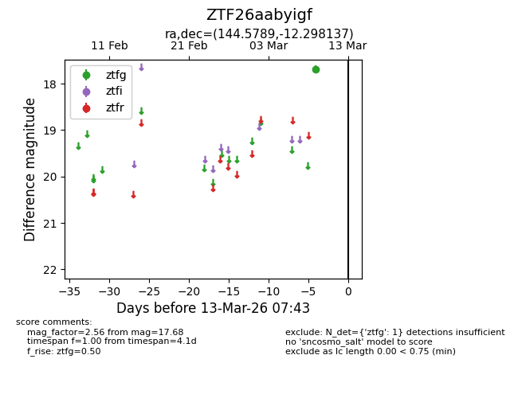
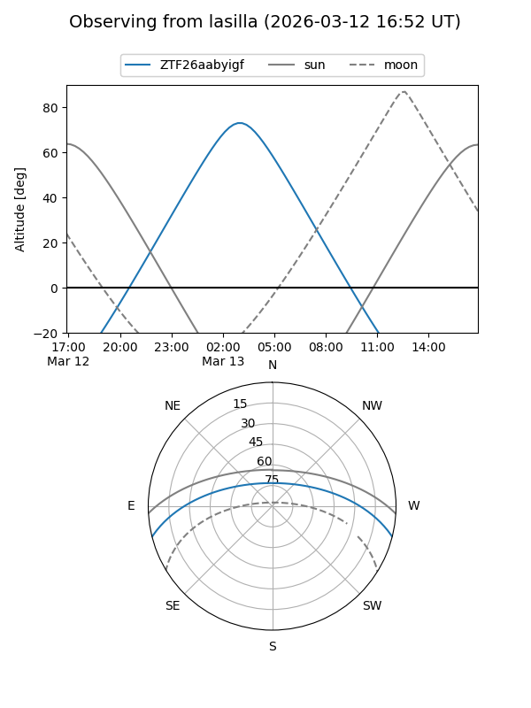
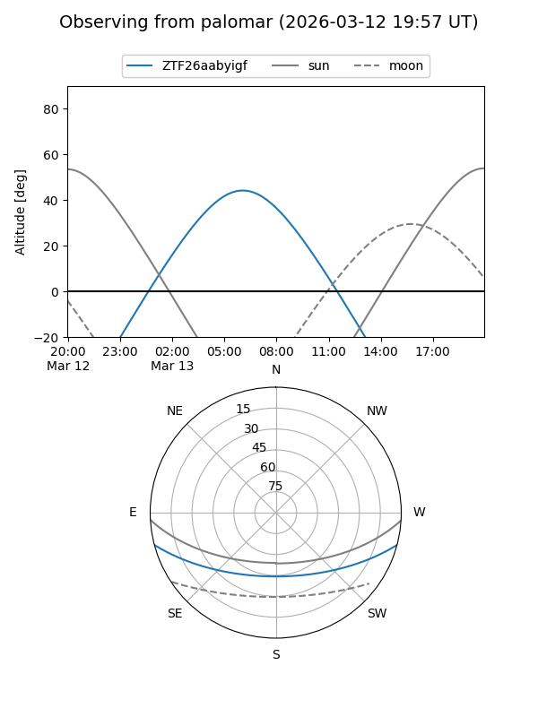

ZTF26aabyigf
Target ZTF26aabyigf at 2026-03-13 07:45
Aliases and brokers:
FINK: link
Lasair: link
ALeRCE: link
alt names
ZTF26aabyigf (ztf,fink_ztf)
Coordinates:
equatorial (ra, dec) = 144.5789,-12.29814
equatorial (HMS+DMS) = 09:38:18.93,-12:17:53.29
galactic (l, b) = (246.6145,+28.78714)
Flags:
Photometry:
last ztfg=17.68
1 ztfg detections
Lightcurve

Visibility


Additional plots